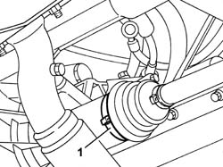
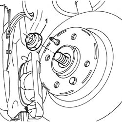
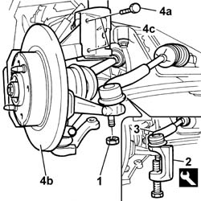
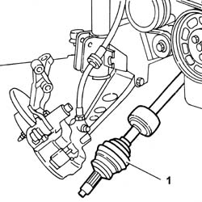
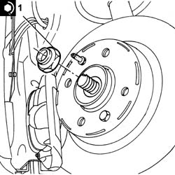
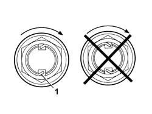

2710A40 l/h or r/h drive shaft (one) - r + r
- Path
- Procedures > 27 AXLE > 2710 FRONT AXLE > 2710A drive shafts and joints > 2710A40 l/h or r/h drive shaft (one) - r + r
- Kind
- repair procedure (removal / refitting; the operation number is the code)
- Applies to
- all engines; all production periods
- Interactive page
- https://sloeber94.github.io/elrnDB-fPnd/en/#/2752700
Applies to: all engines; all production periods
 Removing
Removing
 Refitting
RefittingPosition the vehicle on a lift and raise it.
1. Remove the sliding joint boot band.

Applies to: all engines; all production periods
Remove the staking from the wheel side constant velocity joint nut.
1. Undo the wheel side constant velocity joint nut.

Applies to: all engines; all production periods
1. Unscrew the retaining nut.
2. Fit the tool for releasing the steering track rod ends.
 | Name | Country |
|---|---|---|
2 | Extractor | 1.871.000.700 |
3. Release the steering track rod end from the wheel hub.
4. Undo the fixing bolts (4a) and release the front steering knuckle (4b) from the shock absorber (4c).

Applies to: all engines; all production periods
1. Release the driveshaft firstly from the differential and then from the front steering knuckle and remove it.

Applies to: all engines; all production periods
Refitting
RemovingFill the sliding joint boot and the seat for the joint in the differential with grease.
 | Type | Component | Name | Qty. |
|---|---|---|---|---|
- | Grease (g) | DIFF END CONSTANT VELOCITY JOINT | TUTELA MRM ZERO | 100 |
Fit the driveshaft first on the front steering knuckle and then on the differential.
Join the front steering knuckle with the shock absorber using the bolts and tighten the nuts to torque.
 | Fastening | Component | Ø | Value (daNm) |
|---|---|---|---|---|
- | Nut | FRONT HUB WITH BEARINGS | M12 | 9.1 |
Fit the steering track rod ends in place and tighten the fixing nut to torque.
| Fastening | Component | Ø | Value (daNm) |
|---|---|---|---|---|
- | Nut | ADJUSTABLE LINK BALL JOINTS | M12 x 1.5 | 3.4 |
1. Tighten the nut for the wheel side constant velocity joint to torque.
| Fastening | Component | Ø | Value (daNm) |
|---|---|---|---|---|
1 | Nut | WHEEL END CONSTANT VELOCITY JOINT | M22 | (Wheel) 24.0 |

Applies to: all engines; all production periods
1. Stake the constant velocity joint side nut.

Applies to: all engines; all production periods
Fit the sliding joint boot.
Tighten the sliding joint boot band.
Lower the car and remove it from the ramp.